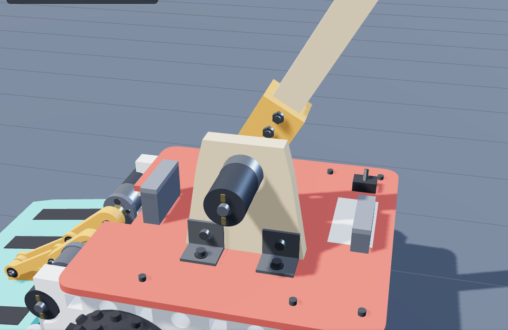
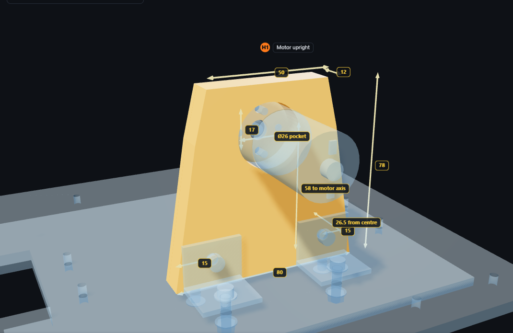
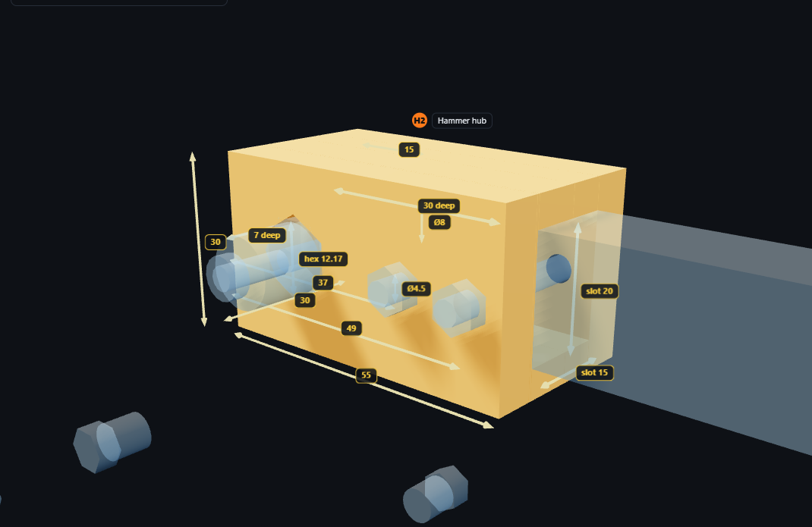

Hello! Please make the 4 wooden parts below. Each part has its own page with a drawing at real size and simple steps.

This is how it will look on the robot: the light wood plate holds a motor, the stick and head swing over the top.
| All numbers | are millimetres (mm). 10 mm = 1 cm. |
| Red arrows | a measurement: the number is the distance between the two arrow tips. |
| A B … | a hole. The table under the drawing says which drill bit and how deep. |
| - - - dashed line | something on the other side of the wood (you can't see it from this side). |
| Real size | print the pages at 100 % ("actual size", not "fit to page"). Then the drawing is exactly as big as the part – you can cut it out, glue it on the wood and drill through the marks. Check: the black-and-white bar must measure 50 mm with a ruler. |
1 piece of 12 mm plywood. This is the FRONT side. The motor goes on the BACK side (the dashed big circle is on the back).
Tip: cut this page out along the outline, glue it on the plywood, cut the shape, then drill through the centre of each circle.
| Hole | How many | Drill bit | How deep | Where |
|---|---|---|---|---|
| A | 1 | 26 mm flat-bottom bit (Forstner) | 9 mm only – do NOT go through | from the BACK side, in the middle (40 from each side), 58 up from the bottom |
| B | 1 | 8 mm | all the way through | in the middle of hole A |
| C | 2 | 3.5 mm | through | 8.5 above and 8.5 below the middle of A. On the FRONT side widen the top a little (countersink) so a flat screw head sits flush |
| D | 2 | 4.5 mm | through | 12 up from the bottom, 15 in from each end |
| E | 2 | 3 mm | 25 mm deep | into the bottom edge, 10 in from each end, in the middle of the 12 mm thickness |
Gluing 4 simple pieces is easier than cutting a square hole into one block. Use hard wood; all pieces are 25 mm tall.
| Piece | How many | Size (long × tall × thick) |
|---|---|---|
| 1 and 2 – long pieces | 2 | 64 × 25 × 7.5 |
| 3 and 4 – small blocks | 2 | 22 × 25 × 15 |
| Rubber pads | 2 | 28 × 23, 3 mm thick |

The motor (blue) sits in the 26 mm hole of the plate; 2 metal angles bolt the plate to the robot.

A 3D-printed part (orange) goes on the motor; the stick (blue) slides into it and we bolt it.